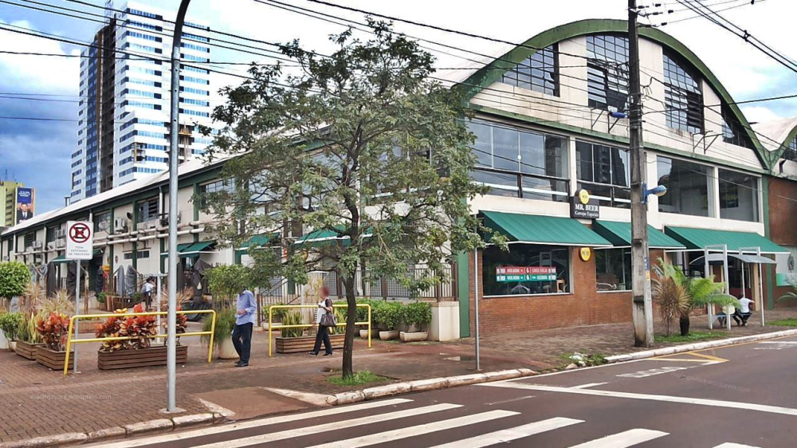

| Home |

Foto Mercadão Municipal.
A história do Mercadão Municipal de Maringá confunde-se com a
própria história da cidade. Embora a maioria de seus frequentadores
se lembre da data de inauguração, em outubro de 2009, o local onde
está instalado o Mercadão data data de 1953, quando a família Tozzo
migrou do Rio Grande do Sul para Maringá e abriu o primeiro armazém
de secos & molhados da cidade, a Cerealista Tamandaré.
Passados 60 anos, os antigos armazéns ganharam uma revitalização e
abraçaram de vez o conceito de mercadão municipal, como nos grandes
centros. Hoje é um ponto de encontro para as famílias, um local de
lazer nos finais de semana com música ao vivo, restaurantes típicos
com o melhor da culinária brasileira, além, é claro, de ser um completo
espaço gastronômico para quem procura qualidade e produtos diferenciados.
São 30 lojas com os mais variados produtos, desde frutas típicas e exóticas,
a vinhos nacionais e importados, cervejas de todos os cantos do mundo,
temperos, queijos, carnes, peixes, doces, chocolates e muito mais, tudo
reunido em um só lugar. Percorrer os corredores do Mercadão é viver uma
inesquecível experiência gastronômica.
Não é por menos que o Mercadão Municipal é conhecido como Fonte dos Sabores.
Um ponto de encontro onde o tempo teima em não passar.